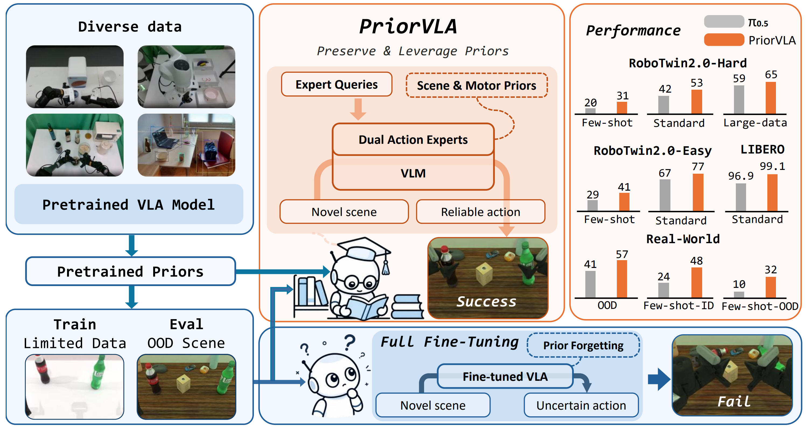
Overview of PriorVLA. Large-scale pretraining provides broad priors for general manipulation, but full fine-tuning on limited downstream data can treat these priors mainly as initialization and lead to prior forgetting, especially when evaluated under OOD scenes. PriorVLA instead preserves and leverages pretrained scene and motor priors through Dual Action Experts and Expert Queries, improving adaptation across simulation and real-world tasks with the largest gains in few-shot and OOD settings.
Abstract
Large-scale pretraining has made Vision-Language-Action (VLA) models promising foundations for generalist robot manipulation, yet adapting them to downstream tasks remains necessary. However, the common practice of full fine-tuning treats pretraining as initialization and can shift broad priors toward narrow training-distribution patterns. We propose PriorVLA, a novel framework that preserves pretrained priors and learns to leverage them for effective adaptation. PriorVLA keeps a frozen Prior Expert as a read-only prior source and trains an Adaptation Expert for downstream specialization. Expert Queries capture scene priors from the pretrained VLM and motor priors from the Prior Expert, integrating both into the Adaptation Expert to guide adaptation. Together, PriorVLA updates only 25% of the parameters updated by full fine-tuning.
Across RoboTwin 2.0, LIBERO, and real-world tasks, PriorVLA achieves stronger overall performance than full fine-tuning and state-of-the-art VLA baselines, with the largest gains under out-of-distribution (OOD) and few-shot settings. PriorVLA improves over π0.5 by 11 points on RoboTwin 2.0-Hard and achieves 99.1% average success on LIBERO. Across eight real-world tasks and two embodiments, PriorVLA reaches 81% in-distribution (ID) and 57% OOD success with standard data. With only 10 demonstrations per task, PriorVLA reaches 48% ID and 32% OOD success, surpassing π0.5 by 24 and 22 points, respectively.
Method Overview
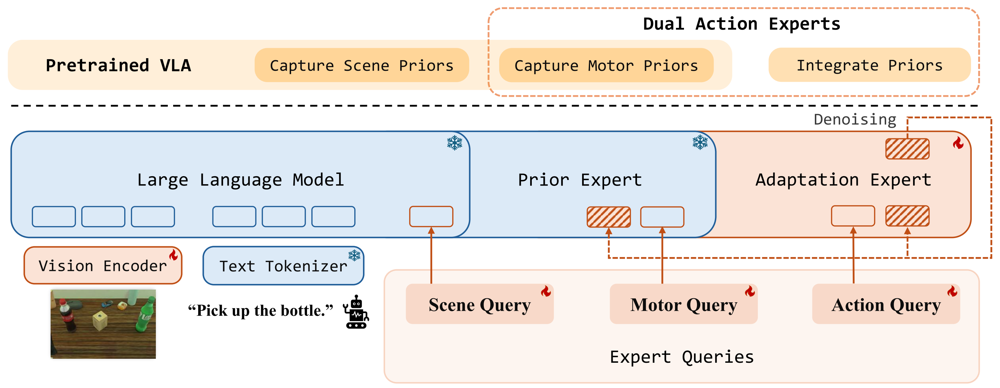
PriorVLA architecture. PriorVLA builds on a pretrained VLA and introduces two coupled modules: Dual Action Experts and Expert Queries. Dual Action Experts keep the original AE as a frozen Prior Expert and train an Adaptation Expert for downstream action generation. Expert Queries capture scene and motor priors from pretrained forward paths and integrate them into the Adaptation Expert; the Prior Expert serves only as a read-only prior source, while the Adaptation Expert drives denoising and produces the final action chunk.
Experimental Overview
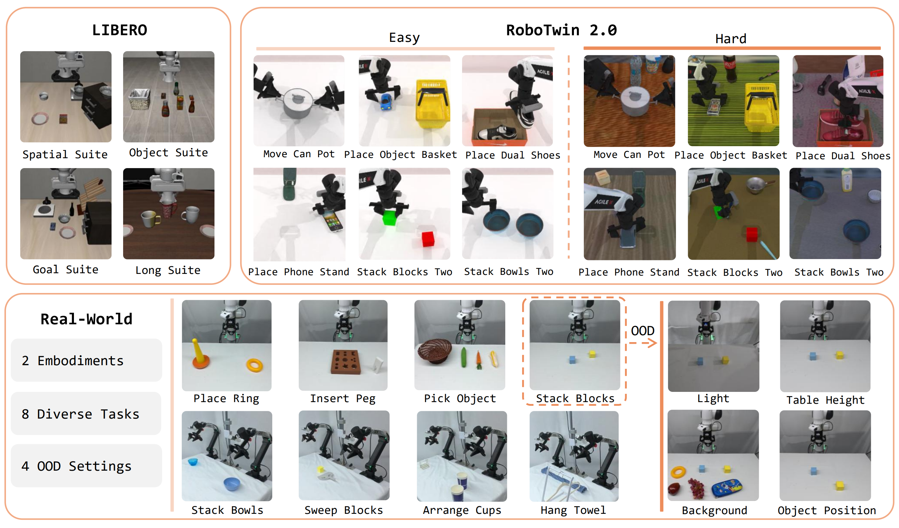
Experimental overview. We evaluate PriorVLA on RoboTwin 2.0, LIBERO, and two real-world robot embodiments, covering ID/OOD generalization, data regimes, and component ablations.
Real-World Robot Setup
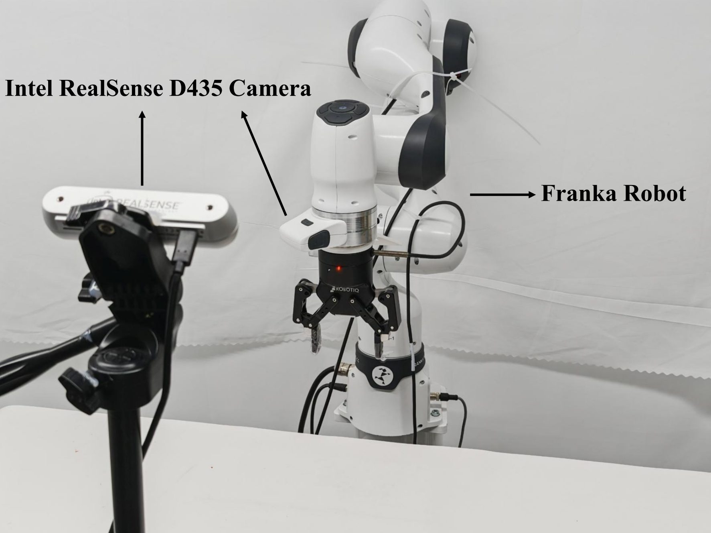
Franka robot setup.
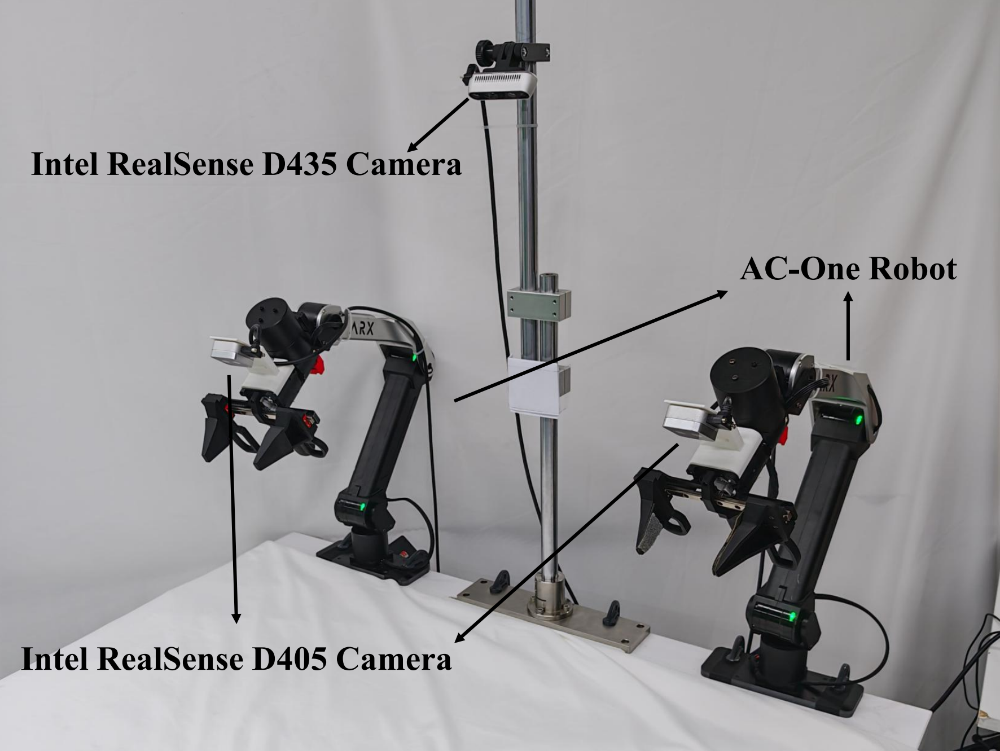
AC-One robot setup.
Real-World Evaluation Videos
Place Ring
ID Setting
π0.5 OOD Failure
PriorVLA OOD Success
Stack Blocks
ID Setting
π0.5 OOD Failure
PriorVLA OOD Success
Insert Peg
ID Setting
π0.5 OOD Failure
PriorVLA OOD Success
Pick Object
ID Setting
π0.5 OOD Failure
PriorVLA OOD Success
Stack Bowls
ID Setting
π0.5 OOD Failure
PriorVLA OOD Success
Sweep Blocks
ID Setting
π0.5 OOD Failure
PriorVLA OOD Success
Arrange Cups
ID Setting
π0.5 OOD Failure
PriorVLA OOD Success
Hang Towel
ID Setting
π0.5 OOD Failure
PriorVLA OOD Success
Simulation Results
RoboTwin 2.0
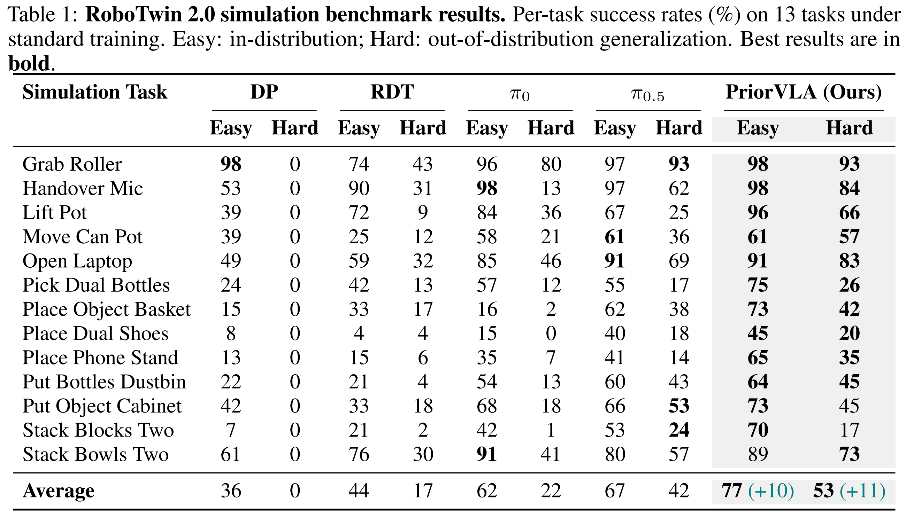
Data Scale on RoboTwin 2.0
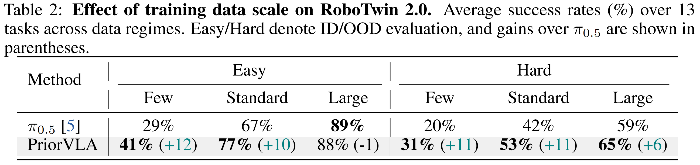
LIBERO
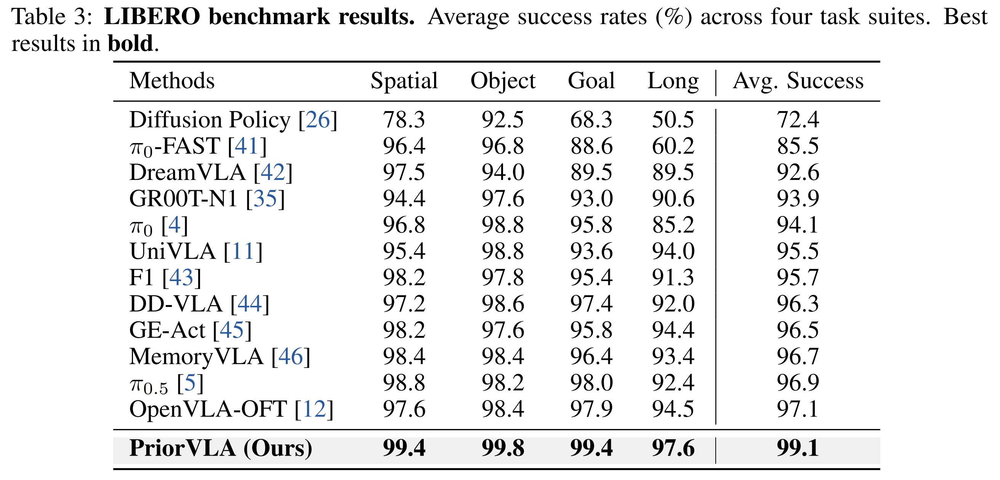
Real-World Results
Standard-Data Setting
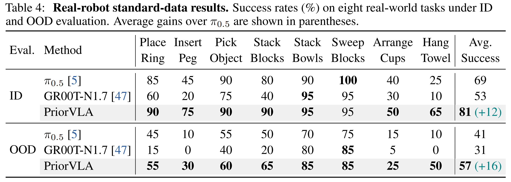
Few-Shot Setting
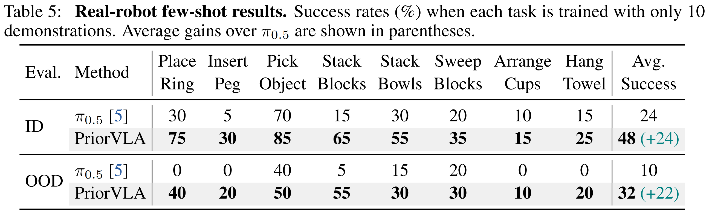
Ablation Study
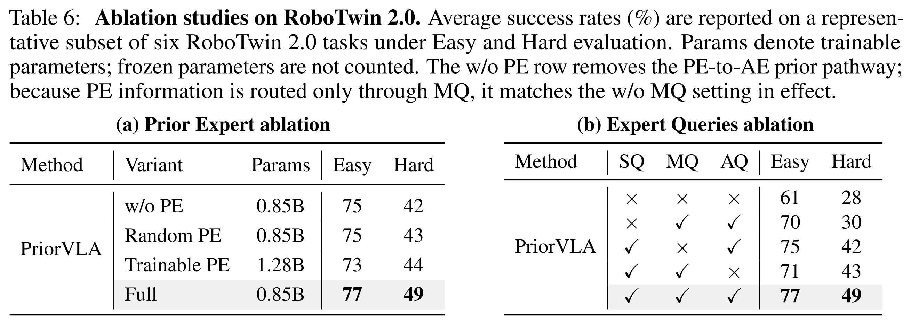
BibTeX
@article{guo2026priorvla,
title={PriorVLA: Prior-Preserving Adaptation for Vision-Language-Action Models},
author={Xinyu Guo and Bin Xie and Wei Chai and Xianchi Deng and Tiancai Wang and Zhengxing Wu and Xingyu Chen},
journal={arXiv preprint arXiv:2605.10925},
year={2026},
url={https://arxiv.org/abs/2605.10925}
}